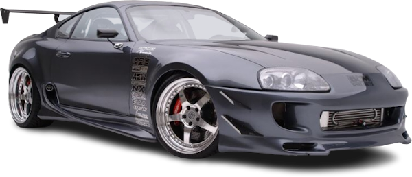
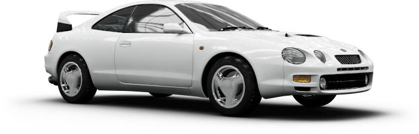
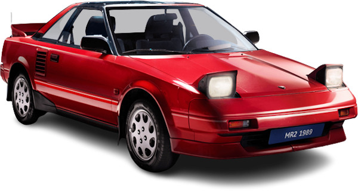

Toyota encontró en la cuarta generación del Supra, que se estrenó en 1993, un hito que se volvería una parte importante de la cultura automotriz de los años 90. El cambio generacional que recibió, tomó como base la plataforma del Lexus SC coupé, contaba con un lenguaje de diseño agresivo, pero fluido, con partes redondeadas y un gran alerón trasero.
La reducción de peso fue sumamente importante para este modelo, pues se deshizo de casi 60 kg (132 libras) en comparación con la generación anterior, gracias al uso de aluminio en el capó, techo y soportes de los parachoques.
Lo verdaderamente icónico de esta generación fue el motor 2JZ desarrollado por YAMAHA. Los 6 cilindros y dos turbocompresores generaban 320 HP (324 CV; 239 kW) a las 5600 rpm y un par máximo de 43,5 kg·m (427 N·m; 315 lb·pie) a las 4000 rpm. La transmisión era manual de 6 velocidades o automática de 4 marchas con modo manual.
En materia de desempeño, lograba hacer el 0 a 100 km/h (62 mph) en 4,6 segundos, lo que lo colocaba por arriba del Porsche 928 GTS de la época, que costaba casi el doble que el Supra.
| Características | Motor: | En linea |
|---|---|---|
| Combustible: | Gasolina | |
| Potencia Máxima (CV): | 340 | |
| Revoluciones Potencia Máxima (rpm): | 6500 | |
| Torque máximo (Nm): | 500 | |
| Revoluciones Torque Máximo (rpm): | 4500 | |
| Ubicación: | Central Delantero | |
| Cantidad de válvulas: | 4 | |
| Cilindrada: | 2998 c.c. | |
| Alimentación: | Inyección directa turbo |

El Célica fue diseñado originalmente para conductores de espíritu joven y que desearan algo más que un simple medio de transporte. El diseño del Célica comenzó en 1967, se presentó en el Salón del Automóvil de Tokio de 1970 y el vehículo fue lanzado al público en 1971. Basado en el prototipo Ex-1 Coche del futuro, su estilo era absolutamente revolucionario para la época e influyó de forma notable en el establecimiento del segmento del mercado de deportivos del segmento D asequibles, potentes y fiables.
El Célica original estaba equipado con un motor de carburación de cuatro cilindros de 1,6 litros. Solamente disponible en acabado ST y cupé de dos puertas, el Célica era la versión Toyota del Mustang. En Alemania al Opel Manta, (posteriormente substituido por el Opel Calibra), se le conoce como el Célica de Opel o el Célica alemán. El Célica se vendió bien desde el principio, su primer cambio importante tuvo lugar en 1974 con la adición del modelo de GT. El modelo GT venía con un motor de dos litros que, en distintas versiones, se montaría en los Toyota Célica durante los 11 años siguientes.
| Características | Motor: | En linea |
|---|---|---|
| Combustible: | Gasolina | |
| Potencia Máxima (CV): | 143 | |
| Revoluciones Potencia Máxima (rpm): | 6400 | |
| Torque máximo (Nm): | 170 | |
| Revoluciones Torque Máximo (rpm): | 4200 | |
| Ubicación: | Delantero transversal | |
| Cantidad de válvulas: | 4 | |
| Cilindrada: | 1794 c.c. | |
| Alimentación: | Inyección indirecta |

El prototipo original del MR2 de primera generación se presentó en el Salón del Automóvil de Tokio en octubre de 1983 como "SV-3", cuyo lema era: "Un coche de consumo eficiente para entusiastas, que sea conducido por personas que disfruten de la conducción sin necesidad de preocuparse de normativas o la escasez de combustible".10 Posteriormente, comenzó a fabricarse el modelo «zenki» (“inicial”) en Japón durante la primavera de 1984.11 designándolo el código de modelo "W10". Cuando estaba equipado con el motor de 1452 cm³ (1,5 litros) 3A, se conocía como el "AW10", mientras que la versión de 1587 cm³ (1,6 litros) 4A se identificaba con el código "AW11".
Como se diseñó para acomodar un motor de 2 litros,12 sus características principales incluyeron su carrocería ligera, tan baja como 2095 libras (950 kg) en Japón y 2350 libras (1066 kg) en los Estados Unidos, con un manejo fuerte y ligeramente motorizado, es decir, un motor de pequeña cilindrada. El coche se refiere a menudo como el AW11, referente al código del chasis de las versiones más comunes del motor A de 1587 cm³ (1,6 litros).
| Características | Motor: | En linea |
|---|---|---|
| Combustible: | Gasolina | |
| Potencia Máxima (CV): | 140 | |
| Revoluciones Potencia Máxima (rpm): | 6400 | |
| Torque máximo (Nm): | 170 | |
| Revoluciones Torque Máximo (rpm): | 4200 | |
| Ubicación: | Central transversal | |
| Cantidad de válvulas: | 4 | |
| Cilindrada: | 1998 c.c. | |
| Alimentación: | Inyección indirecta |